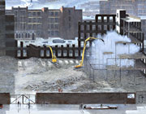
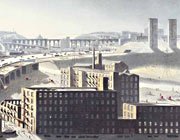

|
| For nearly thirty years, Helen Clapcott has been painting the town of Stockport, concentrating on the changes that have taken place in its urban identity.Although she was born in Blackpool, moving to Stockport at the age of ten was the seminal experience of her youth, for the town was to become the focus of her external life and her inner imaginings, the lodestone of her art and a source of inspiration that has proved inexhaustible. Her chosen medium has been tempera—traditionally an egg-based emulsion for fixing pigment to prepared panels. Its particular qualities are unostentatious, unlike the bravura of oil paint or the dashing economy of watercolour. The paint is opaque and dries to a gorgeous velvety sheen, but it cannot be applied in translucent glazes, nor in impasto. However, it spoils less quickly than watercolour and tends not to go muddy. Most often tempera is lightly stippled onto a gesso ground in small controlled patches. It is not a spontaneous or all-over medium, but one which requires thought and careful planning. A composition is built up gradually, by increments, but can be easily altered by rubbing out the paint—an attribute Clapcott values. |
| | Stockport (the name has a Saxon derivation) is situated in north-east Cheshire, seven miles south of Manchester, just west of the foothills of the Pennines, and stands on a hilltop location guarding what was once an important ford over the river Mersey. The town was actually built at the confluence of two other rivers, the Tame and the Goyt, which join to form the Mersey which then flows through the town centre in a deep gorge. Stockport was in the forefront of the Industrial Revolution, utilizing its cheap water power to good effect with the first silk mills in England. Cotton soon displaced silk, and the town's prosperity was founded largely on cotton spinning and hat manufacture. Stockport was also in the forefront of the Transport Revolution, inaugurating its splendid trademark viaduct in 1840 so that a railway could be built linking Manchester to London. Over a century later, in the early 1980s, it was to be a motorway that carved through the town. The stately viaduct, which stands 106 feet high and extends approximately a third of a mile in length, now spans the M63 extension as well as the Mersey. |
Today Stockport is in denial. Instead of valuing the extraordinary resources the town possesses - principally its river and its history—these are ignored, old buildings are demolished and the river is even built over (as it is in Merseyway Precinct) in order to provide more shops for the addicts of tat. | Today Stockport is in denial. Instead of valuing the extraordinary resources the town possesses - principally its river and its history—these are ignored, old buildings are demolished and the river is even built over (as it is in Merseyway Precinct) in order to provide more shops for the addicts of tat. A river is a living thing, not a drain. The architect Richard Rogers has called the Thames (another under-used resource) a 'blue highway', and the Mersey should be treated not only with similar respect but with the imagination that will transform it into a contemporary asset. Unfortunately, however, Stockport is now attempting to shed its past, industrial and otherwise, and transform itself into another soulless and indistinguishable conurbation. In their wisdom, the city fathers want to turn it into an 'entrepreneurs paradise', full of 'swanky apartments', with a frenzied night-life to match. This supposedly new economic plan is of course death to the real identity of Stockport, to its long-cherished individuality, to those features and customs and landmarks which have made it what it is. In fact, to the very aspects of the place which Helen Clapcott celebrates in her art. |
| | It was while she was at Liverpool School of Art (1971-5) that Clapcott began to use tempera, at the suggestion of her tutor Mike Knowles. She had wrestled with oil paint to no great effect, always preferring the delicate but exact notation she found possible with watercolour. The encounter with tempera was to be crucial to her development. It enabled her to discover what she wanted to say through her art, as well as the most direct way of saying it; it also suited her temperament. Clapcott made her first tempera painting of Stockport in 1974, and embarked upon a career of singular consistency and persistence. Her postgraduate stint at the Royal Academy Schools therefore (then under the inspired direction of Peter Greenham) was really a period of consolidation rather than experiment. |
| | Clapcott paints small and medium-sized panels. To work on a larger format would be to risk losing the overall picture; certainly it would jeopardize the precise control of detail and nuance which underpins her approach. Clapcott does no preliminary drawing on the panel before she starts a painting, but works straight onto the gesso ground with the paint. Each image of Stockport is pieced together in the studio from drawings made on the spot (rarely now does Clapcott actually paint on site), from memory and long knowledge of the area absorbed whilst walking around it, and with an admixture of imagination when required. She uses photographs strictly as aides-memoire, to check the number of windows in a facade, or the angle and placement of one building in relation to others. |
| | Each painting must have its own individual pattern or design, and is composed as a painting rather than as a quasi-photographic depiction of place. Thus appearances are in effect edited—certain things are left out or added—in order to make a successful composition. (For instance, she finds long shadows, suggesting late afternoon, useful for patterns.) Sometimes Clapcott will draw from the imagination to arrive at the requisite element that needs to be incorporated in a painting, but despite these invented or reinterpreted passages, her paintings remain closely based on the verifiable world. |
Her paintings at times betray a tinge of melancholy—after all, they encapsulate a record of disappearances, the destruction of historic buildings which constitute part of our heritage. | If her high viewpoints owe something to the information to be gleaned from aerial photography and maps, they also serve a very practical purpose by enabling Clapcott to get everything into a composition that she needs. Her paintings are indeed packed with incident, and at times betray a tinge of melancholy—after all, they encapsulate above all else a record of disappearances, the destruction of historic buildings which constitute part of our heritage. The city encloses and engulfs the tiny figures which move like marionettes through the great windy canyons between the tower blocks. The overpowering nature of these cityscapes seems to suggest the insignificance of man within the structures he has made. In this case, it is not man's relative unimportance in the face of Nature that appears as an underlying theme (the subtext of much modern art), but the way we are dwarfed by our own ambitions. |
Detail: The Flats
|

Detail: Stockport Paper Mill
|

Detail: Stopckport (1) |
| Clapcott does experience a certain excitement at discovering changes in the urban fabric. Not all modern development is hideous, cheap and unsightly—though much of it is. She did try for instance to draw the modern pyramid in Brinksway Valley (nicknamed Valley of the Kings after its Egyptian pretensions and as the former site of King Mill), but so far it has defeated her. Her depiction of a grove of tower blocks in The Flats (2000) ironically records a more modern prospect which is also no longer extant. The tower blocks themselves survive, but the piazza which linked them, with its underground carpark, ventilation funnels and play-ground maze, has already been demolished because of its unpopularity.
The roll-call of the vanished continues. She drew Palmer Mill (also called Stockport Paper Mill, as in the picture's title), now demolished, from the roof of nearby Vernon Mill. In order to get the best views of her chosen subject, Clapcott is often forced to clamber into unlikely eyries. Frequently, officious persons shout at her, not sufficiently appreciating her disregard for personal safety and her dedication to her art. On occasion she has even received a parking ticket whilst researching her motif.
The sense of scale Clapcott achieves in her paintings can be disconcerting. In one of the finest of this series, Stockport, a red caterpillar-track crane at bottom right looks like a golf club or putter leaning against the building. Meanwhile the interior of the derelict mill resembles a stack of shelved suitcases and hatboxes, lurking behind a broken facade like a stage flat. The rounded hills have been cut and angled (as if by some giant hand) like slabs of cheese. There's a tower like the Chinese pagoda at Kew. The other red cranes imitate insects with poignantly-jointed probosces. This vast panorama reduces the cars and buses to toys with long cast shadows. Even the hillside tower blocks look small. The prospect stretches out quite literally as far as the eye can see. There is an edgy feel to the picture, a tinge of surrealistic alarm. |
| |
The exactitude of Clapcott's orchestration of her material—the placing of it—is haunting. Vehicles articulate the road system like punctuation marks, their wheels painted as brightly as eyes. Fenestration is a key feature. The attractive grey-green tonality is lit up with accents of stronger colour—red, orange, pink. The chaos of daily existence has been calmed and balanced into a composition at once intriguing and satisfying. The melancholy poetry of demolition is here rendered dispassionately—as it might appear to God's eye, perhaps—sufficiently distanced. |

Detail: Tiviot Dale & Beehive Mills |
Clapcott relishes the grim grandeur of the Victorian mills captured in a carefully-rendered envelope of air and pellucid light. The vistas are dramatic and sculptural: the giant curve of the roadway in Beehive Mills, with the viaduct in the distance, or the freestanding solitary chimneys in Brinksway, Friday Afternoon. The Viaduct (2002) is a close-up study of that tremendous structure, with two chimneys like sentinels overtopping it at either end. The wasteground at the foot of the arcade is littered with old tyres, planks and packing cases. Is this depiction matter-of-fact or deliberately depressing? Is the viaduct—which was actually extensively cleaned in the 1980s—meant as a gigantic symbol of decay? I think not, despite the dour buildings glimpsed between its pillars. Clapcott's painting is a celebration of strength and engineering. A paean to endurance, to the passage of time made visible.
There is feeling in her pictures, but not raw emotion. Clapcott is no expressionist, though she can admire a wide range of work by others. As a young artist she saw two exhibitions that were particularly influential—of work by Munch and Soutine. It was not the styles of painting that inspired her, but the incontrovertible and heartening evidence they presented of the possibilities of art. The motivation of these artists impressed her, more than the surface of their paintings. Clapcott has never sat down to study the history of art nor does she see herself as part of any particular tradition of painting. She just makes her pictures, out of a deep love of the activities of drawing and painting. |
Detail: Row Upon Row | The smaller pictures also contain many passages of fine painting. Look, for example, at Row upon Row. The subject is quite simply rows of terraced houses. A cherished feature is the domestic chimneys expelling white smoke—something you often find in LS Lowry's pictures, treated in a similar way—all flying away here to the left. Lowry, who regularly visited Stockport and painted the viaduct, has long been something of a benchmark for Clapcott. An artist to inspire one to greater heights rather than compete with. For instance, in her recent painting of Crowther Street, Clapcott had to reveal an aspect of the location that Lowry had not included in his painting of the same subject. In Clapcott's painting, the modern blocks at the top of the steps dominate the scene and bring a quite different emotional charge to her interpretation. |

Detail: Chasing a Dog |
In Clapcott's vision there is none of the ugliness and gloom and grotesquerie that is found in Lowry's pictures. There is some of the humour (chasing a dog from a football pitch, kids making a chariot from a supermarket trolley), but it is much gentler than the often distorted products of Lowry's black disposition. But if it was Lowry who made us recognize the strange beauty of the industrial scene in the first place, Helen Clapcott has built on that achievement, and substantially added to it. |
Her paintings are masterly statements about light and place, about urban change and the inexorable march of history. | Clapcott's work is well-known in the North of England: she has had solo shows at both Salford and Stockport Art Galleries, and has exhibited regularly with commercial galleries in Manchester and also in Surrey. Most of her work has been sold to appreciative collectors. This exhibition is by way of introducing her paintings to a London public, being her first solo show in the capital, though for many years she contributed regularly to the Royal Academy Summer Exhibition (1976-89). Clapcott's vigilant and highly-wrought compositions have a sureness that is utterly compelling. She concerns herself with a familiar terrain which she renders in a deadpan but totally engaged manner. Her paintings are masterly statements about light and place, about urban change and the inexorable march of history. Yet she has no intention of painting a manifesto: it for us to respond in whatever way we need to her cool crisp evocations of the town she loves.
|
| | Andrew Lambirth |